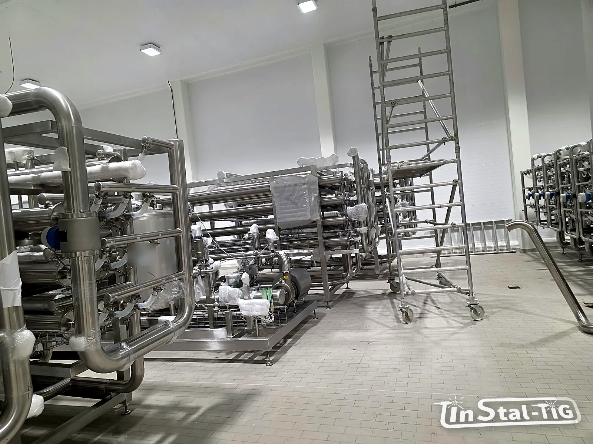

Osłony maszyn ze stali nierdzewnej: co mówią przepisy maszynowe

Osłona maszyny ma chronić człowieka przed ruchomymi częściami, a w zakładzie spożywczym także maszynę przed wodą i chemią z mycia. Dobrze zrobiona nie przeszkadza w pracy i daje się umyć. Źle zrobiona jest omijana, zdejmowana „na chwilę” albo staje się miejscem, w którym zbiera się brud. Wyjaśniamy, co o osłonach mówią przepisy i normy, i o czym pamiętać, zamawiając je ze stali nierdzewnej.
Jakie przepisy mają znaczenie?
- Dyrektywa maszynowa 2006/42/WE, w Polsce wdrożona rozporządzeniem w sprawie zasadniczych wymagań dla maszyn. Określa m.in. wymagania dla osłon i urządzeń ochronnych.
- Rozporządzenie (UE) 2023/1230 w sprawie maszyn, które zastąpi dyrektywę i będzie stosowane od 20 stycznia 2027 r. Przy nowych projektach warto już teraz brać je pod uwagę.
- Przepisy o minimalnych wymaganiach dla maszyn użytkowanych, które dotyczą pracodawcy i maszyn już pracujących w zakładzie.
- Normy zharmonizowane, m.in. PN-EN ISO 12100 (ocena ryzyka), PN-EN ISO 14120 (projektowanie i budowa osłon), PN-EN ISO 13857 (odległości bezpieczeństwa) i PN-EN ISO 14119 (urządzenia blokujące).
Osłona to część systemu bezpieczeństwa maszyny, a nie samodzielny element. O jej rodzaju i wymiarach decyduje ocena ryzyka maszyny, którą wykonuje producent maszyny albo ten, kto ją modyfikuje.
Osłony stałe i ruchome
- Osłona stała jest zamocowana tak, że da się ją otworzyć lub zdjąć tylko narzędziem. Przepisy wymagają, żeby jej elementy mocujące, tam gdzie to możliwe, zostawały na osłonie albo maszynie po jej zdjęciu, czyli żeby śruby się nie gubiły.
- Osłona ruchoma z blokadą (np. drzwiczki) jest połączona z układem sterowania tak, że po jej otwarciu niebezpieczne ruchy się zatrzymują, a maszyny nie da się uruchomić, dopóki osłona jest otwarta. Po otwarciu powinna pozostawać przymocowana do maszyny.
Jeśli do jakiegoś miejsca trzeba często sięgać, np. przy regulacji czy czyszczeniu, zwykle lepiej sprawdza się osłona ruchoma z blokadą niż stała. Osłonę, którą trzeba co chwilę odkręcać, ludzie prędzej czy później zaczynają omijać.
Co musi spełniać dobra osłona?
- ma solidną konstrukcję i nie tworzy nowych zagrożeń, np. ostrych krawędzi czy miejsc przytrzaśnięcia,
- nie da się jej łatwo obejść ani wyłączyć,
- stoi w odpowiedniej odległości od strefy zagrożenia; wielkość otworów w siatkach i blachach perforowanych musi być dobrana do tej odległości według PN-EN ISO 13857, żeby nie dało się przez nie sięgnąć ręką czy palcami do ruchomych części,
- jak najmniej ogranicza widok na pracę maszyny,
- pozwala wykonać niezbędne czynności, np. wymianę narzędzi czy konserwację, w miarę możliwości bez jej zdejmowania.
Warto wiedzieć: dobudowanie lub przerobienie osłon w istniejącej maszynie to zmiana jej systemu bezpieczeństwa. Przy większych modyfikacjach ten, kto je wykonuje, może przejąć obowiązki producenta maszyny. Dlatego zakres takich prac warto ustalić z osobą odpowiedzialną za bezpieczeństwo maszyn w zakładzie.
Osłony w przemyśle spożywczym: higiena
W zakładach spożywczych osłona musi też dać się dobrze umyć. Wymagania higieniczne dla maszyn opisują m.in. normy PN-EN 1672-2 i PN-EN ISO 14159. W praktyce oznacza to:
- stal nierdzewną, zwykle 304, a przy chlorkach i intensywnym myciu 316L (porównanie w artykule Stal 304 czy 316L?),
- pochylone górne powierzchnie, żeby nie stała na nich woda ani nie odkładano na nich przedmiotów,
- szczelnie zaspawane narożniki i profile, bez szczelin, w których zbiera się brud (o korozji szczelinowej piszemy w tekście o korozji stali nierdzewnej),
- gładkie powierzchnie bez ostrych krawędzi i trudno dostępnych zakamarków,
- wizjery z materiału odpornego na środki myjące, gdy trzeba widzieć pracę maszyny,
- dostęp do mycia: osłony łatwe do otwarcia lub zdjęcia przy myciu, ale z zachowaniem zasad bezpieczeństwa.
Co przygotować przed zamówieniem osłon?
- wyniki oceny ryzyka maszyny albo informację, kto ją wykonuje,
- rodzaj osłony (stała czy ruchoma z blokadą) i to, czy dostarczacie wyłączniki blokujące oraz kto podłącza je do układu sterowania,
- wymiary maszyny, zdjęcia i miejsca, do których trzeba mieć dostęp przy pracy i myciu,
- warunki pracy: woda, para, chemia myjąca, temperatura,
- wymagania higieniczne zakładu.
Obudowy i osłony maszyn ze stali nierdzewnej to jedna z pozycji naszej oferty. Rysunki, zdjęcia i opis maszyny możesz przesłać przez formularz Wycena online. Podobne zasady bezpieczeństwa dla dojść do maszyn opisujemy w artykule o pomostach i podestach.
Potrzebujesz osłon do maszyny?
Zadzwoń albo napisz. Prześlij zdjęcia i opis maszyny, a porozmawiamy o rozwiązaniu i przygotujemy wycenę.
Zadzwoń: 667 466 431 Napisz e-mail Wycena online